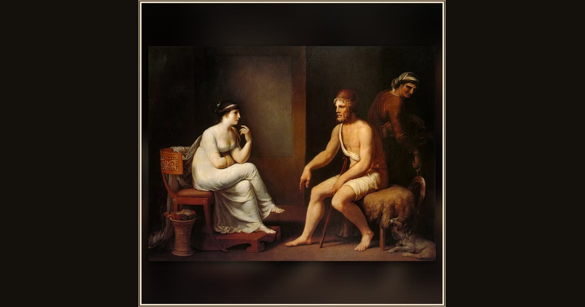

Odysseus and Penelope
Johann Heinrich Wilhelm Tischbein · 1802 · Wikimedia Commons
Feel the gap Tischbein leaves between them: Penelope sits drawn back on her chair, chin on hand, studying the stranger who says he is her husband, while Odysseus leans in under a red traveler's cap (Od. 23.85-110). The old nurse waits behind with a jug and a h